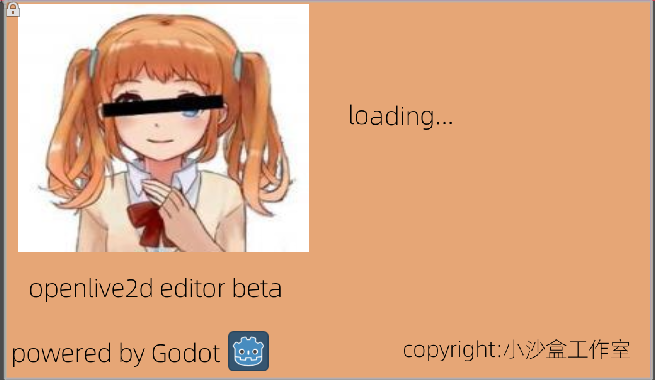

language:简体中文/English/Japanese

The 2d animate you waited for
OpenLive2d提供了一系列常用的工具，所以你只需要专注的做2d动画设计就行。 openLive2d是完全免费和开源的，开源协议是GPL，你的live2d形象是你的，知道最后一个像素都是你的
考虑捐赠：Openlive2d没有任何的开源赞助商和投资人支持，全靠作者一人开发，底层依赖Godot游戏引擎，如果你喜欢这个软件，欢迎给我捐赠
copyright @c 2021-2021
编辑器源码地址gitee
后续可能会提供sdk，也是开源的，但是如果有sdk定制问题，需要付费，我们的技术支持是收费的